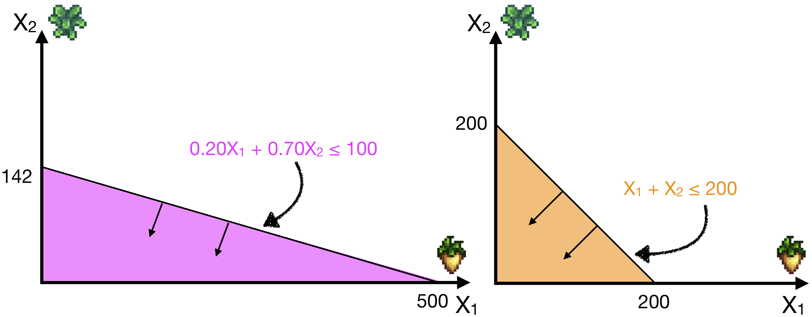
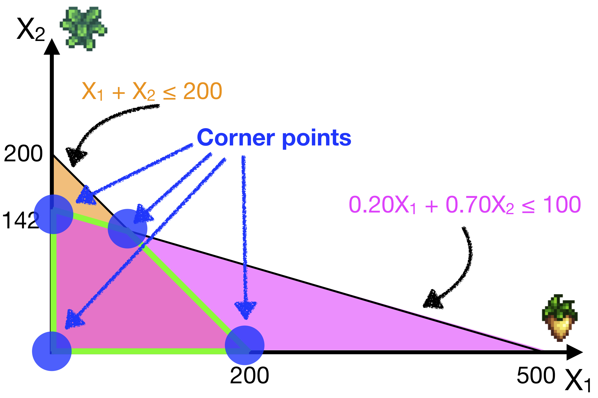
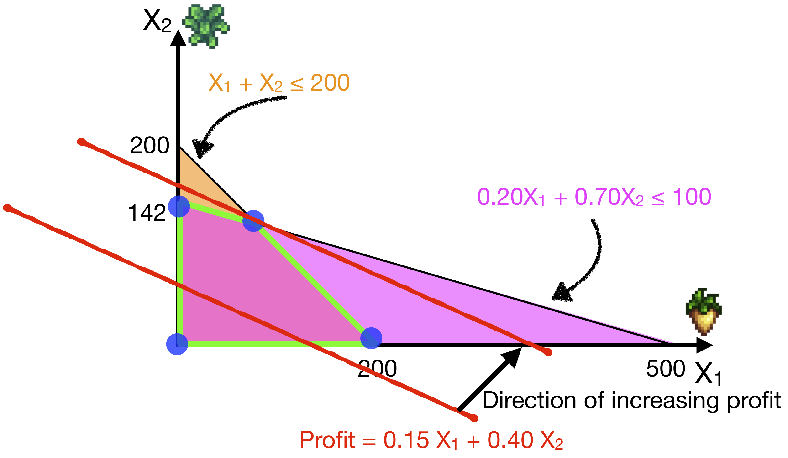
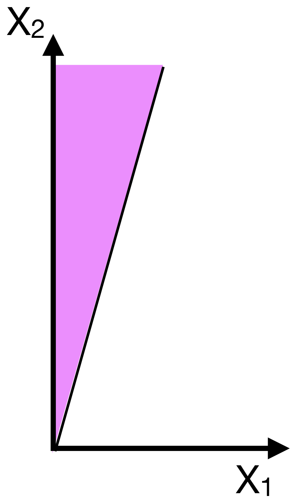

12.4 Solving the Optimization Model
BT1101
Before we start, it is good practice to formally write down the optimisation model that you want to solve.
This summarises all the information in the problem into one system of equations to solve. So for the Farming Example, we have:
| Decision Variables: \(X_1\) = number of plots of parsnips grown \(X_2\) = number of plots of kale grown |
Maximize Profits = 0.15 \(X_1\) + 0.40 \(X_2\) |
|---|---|
| subject to: | - |
| Budget Constraints | \(0.20X_1 + 0.70 X_2 \leq 100\) |
| Space Constraints | \(X_1 + X_2 \leq 200\) |
| Non-negativity | \(X_1 \geq 0\) \(X_2 \geq 0\) |
Any solution that satisfies all the constraints is a feasible solution. In optimization, we want to find the best / optimal feasible solution.
Let us understand this problem in more detail, by graphing our constraints as regions on an \(X_1\)-\(X_2\) graph, with \(X_1\) on the horizontal axis and \(X_2\) on the vertical axis.
Below we’ve plotted the two constraints:
- \(0.20X_1 + 0.70 X_2 \leq 100\), on the left, in magenta
- \(X_1 + X_2 \leq 200\), on the right, in orange

Since these are linear constraints, we can easily plot them by defining two points for each line, and then connecting them. For example, in the left graph, we need to plot: \(0.20X_1 + 0.70 X_2 \leq 100\). The first point that will be handy is where it crosses the vertical axis; in this case, \(X_1 = 0\), and so we can solve \(X_2 \leq (100/0.70)\), or \(X_2 \leq 142\) (rounding down). The second point is where it crosses the horizontal axis. Now, \(X_2 = 0\), and so \(X_1 \leq (100/0.20)\) or \(X_1 \leq 500\).
Thus, we can connect the point \(X_1=0, X_2=142\) on the vertical axis, with \(X_1=500, X_2=0\) on the horizontal axis with a straight line. Then we just read the constraint direction and reason that it should include the area down and to the left of this line!
Make sure you understand the right graph as well, and understand how to reproduce it!
Question: What do the non-negativity constraint regions look like?Feasible Regions
The Feasible Region is the intersection of all the constraint regions. So let’s plot those two regions above on the same plot.

A feasible solution is an allocation of decision variables (like \(X_1\) = 10, \(X_2\) = 10), that satisfies all the constraints.
It also follows, that every feasible solution will lie in the feasible region. That means that every point within the feasible region (shaded in green above) could be a solution to this problem.
If there is no feasible region, then there is no feasible solution, and we say that the problem is infeasible. In other words, there is no way to solve this problem while satisfying all the constraints.
Corner Points
While any point in the feasible region is a possible solution, it turns out that the optimal solution, if it exists, lies at a “corner” of the feasible region. Indeed, there are mathematical theorems proving this.
In the plot below we’ve indicated the four corner points for this problem:

Why must an optimal solution lie at a corner? Imagine that you have a solution in the center of the feasible region, not near a boundary. From here, you can still increase or decrease \(X_1\); or you can increase or decrease \(X_2\). These changes would either increase or decrease your profit (“better” or “worse”).
So the best (and worst) solutions are when you cannot increase or decrease your decision variables any more!
Let’s check our profits at each of the corner points. For three of them it’s simple; we just set X1 and X2 to 0 (Bottom-Left), or we set X1 to 0 (Top-Left), or we set X2 to 0 (Bottom-Right).
\[\begin{align} \text{Bottom-Left }:& \; X_1 = 0 ; \;\;\;\; X_2 = 0 ; \;\;\;\; \text{Profit} = 0 \quad [\textbf{Worst}] \\ \text{Top-Left }:& \; X_1 = 0 ; \;\;\;\; X_2 = 142 ; \; \text{Profit} = 56.8 \\ \text{Bottom-Right }:& \; X_1 = 200 ; \; X_2 = 0 ; \;\;\;\; \text{Profit} = 30 \\ \end{align}\]
Note, the WORST solution is also at a corner point.
Can you reason out why?
In this case, the bottom-left point happens to be the worst!At the fourth corner point (the top-right point), this point satisfies both the inequalities exactly. So they become equalities, which we can solve as a pair of simultaneous equations:
\[\begin{align} X_1 + X_2 &= 200 \quad (1) \\ 0.20X_1 + 0.70X_2 &= 100 \quad (2) \\ (1) \implies X_2 &= 200 - X_1 \\ \text{sub into } (2): 0.20X_1 + 0.70 (200 - X_1) &= 100 \\ (0.20 - 0.70) X_1 &= 100 - 140 \\ X_1 &= 80 \\ \implies X_2 &= 120 \end{align}\]
Hence, the solution is \(X_1 = 80\), \(X_2 = 120\), which gives us a profit of \(0.15X_1 + 0.40X_2 = 60\).
This happens to be the maximum profit, so (80,120) gives us the optimal solution with a maximum profit of $60.
Level Sets

An alternative way to visualise this solution is to draw the level set of the objective function (i.e., profits).
The level set is the set of all the points that give the same profit. We indicate the direction in which we are optimising (i.e., direction of increasing profit), and we “shift” the level set as we increase profit.
The optimal solution is the last point before the level set leaves the feasible region as we optimise profits. (If the level set is parallel to a constraint line, we could also get a set of optimal solutions)
Solution Types
There are 4 possible types of solutions:
There exists a unique optimal solution.
There exists multiple optimal solutions.
Graphically, this occurs when the set of optimal solutions (i.e., the level set of the optimal solution) is parallel to / lies along a constraint. Thus, every point along that constraint will give an optimal solution.The solution is unbounded
There exists no feasible solutions

Finding corner points in higher dimensions
So we’ve seen that the optimal solution must lie on a corner point. This is true even if we have more than two variables and we cannot plot this on a 2D graph. A ten decision-variable problem will have a feasible region be a region in a ten dimensional space, also called a 10-dimensional polytope. The solution will lie on a corner, or vertex, of this polytope.

Image of a high-dimensional polytope and a path that Simplex Algorithm might take, from Wikipedia
One algorithm to solve these optimization problems is called the Simplex Algorithm, which systematically checks through these corner vertices to find the optimal one.
- The algorithm starts at a vertex (perhaps chosen randomly or through some initialization)
- It will then move along an edge (“side of polytope”) to another vertex only if the objective function value along that edge is increasing.
- It repeats this until it reaches a maximum, i.e., no such edges are found.
- The algorithm terminates at the optimal solution, or reports that none are found (infeasible, or unbounded).
For this chapter, we do not cover how the Simplex algorithm works, but we just discuss the high-level intuition behind it. We will let R implement this algorithm and solve more difficult optimization problems for us.